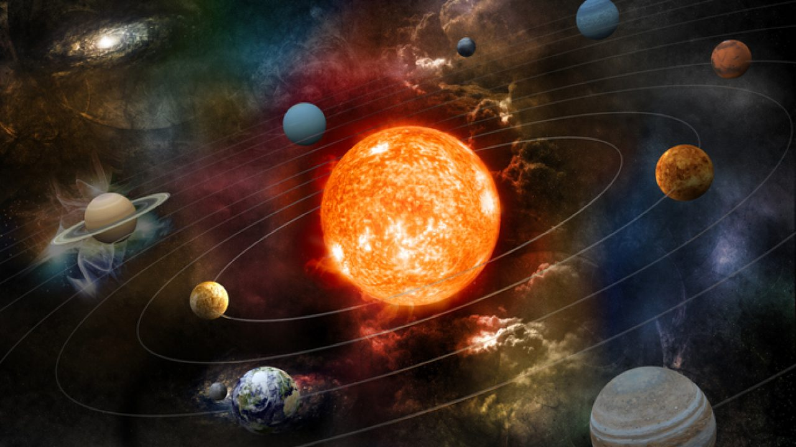
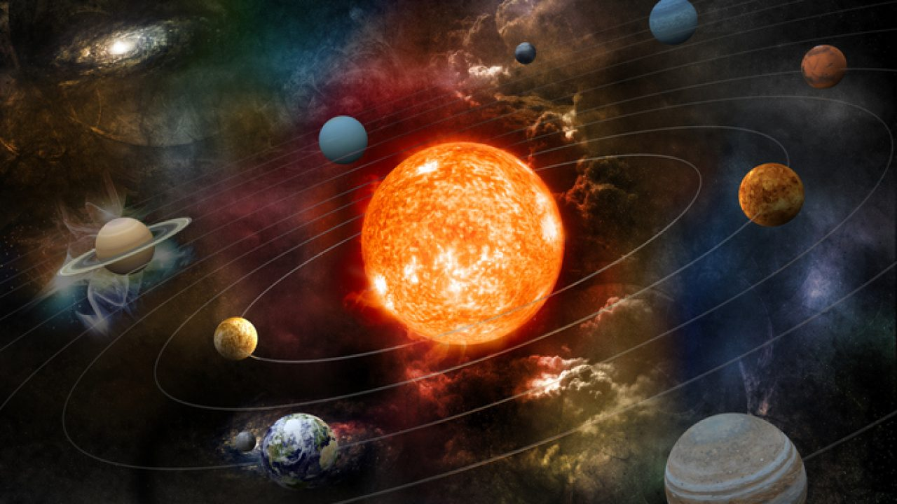

|
El sistema solar es el sistema planetario que liga gravitacionalmente a un conjunto de objetos astronómicos que giran directa o indirectamente en una órbita alrededor de una única estrella conocida con el nombre de Sol. La estrella concentra el 99,86 % de la masa del sistema solar,y la mayor parte de la masa restante se concentra en ocho planetas cuyas órbitas son prácticamente circulares y transitan dentro de un disco casi llano llamado plano eclíptico.Los cuatro planetas más cercanos, considerablemente más pequeños, Mercurio, Venus, Tierra y Marte, también conocidos como los planetas terrestres, están compuestos principalmente por roca y metal. Mientras que los cuatro más alejados, denominados gigantes gaseosos o «planetas jovianos», más masivos que los terrestres, están compuestos de hielo y gases. Los dos más grandes, Júpiter y Saturno, están compuestos principalmente de helio e hidrógeno. Urano y Neptuno, denominados gigantes helados, están formados mayoritariamente por agua congelada, amoniaco y metano.
| Estrella central | El Sol se encuentra en el centro del Sistema Solar, cuya fuerza gravitacional mantiene en órbita a los planetas. |
| Planetas en orden |
|
| Órbitas planetarias | Elípticas, los planetas giran alrededor del Sol siguiendo una línea elíptica. |
| Excentricidad | Es la medida de cuan circular es una órbita, siendo igual a 0 (cero) una órbita perfectamente circular, y a 1 (uno) una órbita elíptica. Por ejemplo, la órbita de Venus es más circular que la órbita de Marte. |
| Período de revolución(Cuánto dura un año en cada planeta) | Tiempo que demora un planeta en dar una vuelta alrededor del Sol, mejor conocido como un año.
|
| Período de rotación(Cuánto dura un día en cada planeta) | Giro sobre un eje invisible que va desde el polo norte al polo Sur pasando por el centro de los planetas, también conocido por día.
|
| Grados de inclinación | Los planetas presentan varios grados de inclinación de su eje con respecto a una linea vertical. Por ejemplo, la Tierra forma un ángulo de 23,5 º, Marte tiene 25,5º y Urano, 97,86º. |
| Campo gravitacional | Cada planeta tiene su propio campo gravitacional, que es la fuerza que atrae a los objetos hacia su centro. Por ejemplo, el campo gravitacional en la Tierra es tres veces más fuerte que el de Marte pero tres veces más débil que en Júpiter. |
| Campo magnético | Los planetas tienen un campo magnético, producto del movimiento de líquidos metálicos en el centro de los mismos. Estos campos magnéticos protegen al planeta de los vientos solares. |
| Cinturón de asteroides | El Sistema Solar presenta un cinturón de asteroides entre Marte y Júpiter, el cinturón de Kuiper que se encuentra más allá de Neptuno y la nube de Oort en el borde exterior del sistema. |
Como se ha dicho, en el centro mismo del sistema solar está el Sol, una estrella enana amarilla de luminosidad V, y el único astro que emite luz propia en el conjunto. A su alrededor orbitan ocho planetas de distinto tamaño y a distintas distancias, trazando a su paso trayectorias elípticas.De igual manera existe un campo abundante de asteroides, en un cinturón que hay luego de Marte, y otro mucho mayor luego de Neptuno. Además, existen asteroides en los anillos que rodean a los grandes planetas exteriores como Saturno y Urano.Deben mencionarse también los satélites naturales, como nuestra Luna, o las lunas de Marte: Deimos y Phobos, los cuales son abundantes en los planetas exteriores: Júpiter y Saturno poseen 63 y 61 respectivamente, mientras que Neptuno y Urano tienen 27 y 13.Por último, existe una serie de objetos trasneptunianos, los más lejanos del Sol del sistema, cuyo poco impacto de la luz solar hace difíciles de estudiar, pero que hipotéticamente serían tres:
El Sol es la estrella en el centro del sistema solar cuya fuerza gravitacional mantiene en órbita a los planetas. Tiene alrededor de 4500 millones de años. Produce su propia luz y calor por el proceso de fusión nuclear.El Sol se mueve a 210 km/s dentro de la Vía Láctea y tarda 225 millones de años en completar una vuelta alrededor del centro de la galaxia.El diámetro del Sol es de 1,4 millones de km. Sus principales componentes son el hidrógeno (92%), el helio (7,8 %) y el resto son elementos más pesados como el oxígeno, carbono, nitrógeno y neón.

Existen ocho planetas principales en el sistema solar, divididos en dos grupos:
El Sol es el único cuerpo celeste del sistema solar que emite luz propia, debido a la fusión termonuclear del hidrógeno y su transformación en helio en su núcleo. El sistema solar se formó hace unos 4600 millones de años a partir del colapso de una nube molecular. El material residual originó un disco circunestelar protoplanetario en el que ocurrieron los procesos físicos que llevaron a la formación de los planetas. El sistema solar se ubica en la actualidad en la nube Interestelar Local que se halla en la Burbuja Local del brazo de Orión, de la galaxia espiral Vía Láctea, a unos 28 000 años luz del centro de esta.
El sistema solar es también el hogar de varias regiones compuestas por objetos pequeños. El cinturón de asteroides, ubicado entre Marte y Júpiter, es similar a los planetas terrestres ya que está constituido principalmente por roca y metal. En este cinturón se encuentra el planeta enano Ceres. Más allá de la órbita de Neptuno están el cinturón de Kuiper, el disco disperso y la nube de Oort, que incluyen objetos transneptunianos formados por agua, amoníaco y metano principalmente. En este lugar existen cuatro planetas enanos: Haumea, Makemake, Eris y Plutón, el cual fue considerado el noveno planeta del sistema solar hasta 2006. Este tipo de cuerpos celestes ubicados más allá de la órbita de Neptuno son también llamados plutoides, los cuales junto a Ceres, poseen el suficiente tamaño para que se hayan redondeado por efectos de su gravedad, pero que se diferencian principalmente de los planetas porque no han vaciado su órbita de cuerpos vecinos.
 
